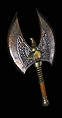

|
冷殺
小斧
Coldkill
Hatchet
|
單手傷害:
(25-29) - (52-60)
(變動) (平均傷害41)
等級需求: 36
射程: 1
耐久度: 28
武器基本速度: [0]
+150-190% 增強傷害
(變動)
30% 增加攻擊速度
打擊時10%機率發動等級10 冰風暴
受攻擊時10%機率發動等級5 霜之新星
+40 冰冷傷害,凍結目標:2秒
15% 最大冰冷抵抗
冰冷抵抗 +15%
|
|

屠夫之瞳
切肉斧
Butcher's Pupil
Cleaver
|
單手傷害:
(55-60) - (132-149)
(變動) (平均傷害98)
等級需求: 39
力量需求: 68
射程: 2
武器基本速度: [10]
+150-200% 增強傷害
(變動)
增加 30-50 傷害
35% 致命攻擊
25% 撕開傷口機率
30% 增加攻擊速度
無法破壞
|
|

島擊
強化雙斧
Islestrike
Twin Axe
|
單手傷害:
(35-37) - (102-110)
(變動) (平均傷害70)
等級需求: 43
力量需求: 85
射程: 2
耐久度: 24
武器基本速度: [10]
+170-190% 增強傷害
(變動)
25% 造成壓碎性打擊機率
+2 德魯依技能等級
+50 對飛射性武器防禦
+10
轉為所有的屬性
+1 狂怒 (限德魯依)
+1 撞鎚 (限德魯依)
|
|

龐貝之怒
喙鉗
Pompeii's Wrath
Crowbill
|
單手傷害:
(33-37) - (81-91)
(變動) (平均傷害60)
等級需求: 45
力量需求: 94
敏捷需求: 70
射程: 2
耐久度: 26
武器基本速度: [-10]
+140-170% 增強傷害
(變動)
增加 35-150 火焰傷害
減慢目標速度 50%
打擊時4%機率發動等級8 火山
擊退
|
|

蛇神守護者
納卡
Guardian Naga
Naga
|
單手傷害:
(40-44) - (132-145)
(變動) (平均傷害90)
等級需求: 48
力量需求: 121
射程: 3
耐久度: 26
武器基本速度: [0]
+150-180% 增強傷害
(變動)
+20 最大 傷害值
+250 毒素傷害,持續10 秒
打擊時5%機率發動等級8 劇毒新星
毒素抵抗 +30%
攻擊者受到傷害 15
|
|

戰爵之證
軍斧
Warlord's Trust
Military Axe
|
雙手傷害:
38 - 93
(平均傷害65)
等級需求: 35
力量需求: 73
射程: 2
耐久度: 30
武器基本速度: [-10]
+175% 增強傷害
恢復耐久度1於4秒內
+0-49 體力
(依角色等級乘0.5)
恢復生命 +20
所有抗性 +10
+75 防禦
|
|

鋼鐵魔咒
鉤斧
Spellsteel
Bearded Axe
|
雙手傷害:
55 - 129 (平均傷害92)
等級需求: 39
力量需求: 37
射程: 2
耐久度: 35
武器基本速度: [0]
+165% 增強傷害
10% 高速施法速度
需求 -60%
法力重生 25%
+100 法力
等級 12 火風暴
(60 聚氣)
等級 20 聖光彈
(100 聚氣)
等級 3 衰老 (30 聚氣)
等級 l 傳送 (20 聚氣)
法術傷害減少 12-15
(變動)
|
|

暴風騎士
戰鬥斧
Stormrider
Tabar
|
雙手傷害: 83-229
(平均傷害156)
等級需求: 41
力量需求: 101
射程: 2
耐久度: 90
武器基本速度: [10]
+100% 增強傷害
增加 35-75 傷害
增加 1-200 閃電傷害
受攻擊時15%機率發動等級5 充能彈
打擊時10%機率發動等級13-20 充能彈
(變動)
打擊時5%機率發動等級10 連鎖閃電
攻擊者受到閃電傷害 15
|
|

碎骨者之刃
哥德之斧
Boneslayer Blade
Gothic Axe
|
雙手傷害:
(50-57) - (196-224)
(變動)
(平均傷害131)
等級需求: 42
力量需求: 115
敏捷需求: 79
射程: 3
耐久度: 50
武器基本速度: [-10]
+180-220% 增強傷害
(變動)
+5-495 對不死系生物準確率 (依角色等級乘5)
+2-247% 對不死系生物傷害 (依角色等級乘2.5)
受攻擊時,以50%機率發動等級12-20 聖光彈
(變動)
等級 20 聖光彈 (200 聚氣)
20% 增加攻擊速度
35% 額外的攻擊準確率
+8 力量
|
|

牛頭怪
古代之斧
The Minotaur
Ancient Axe
|
雙手傷害:
(123-149) - (234-285)
(變動) (平均傷害192)
等級需求: 45
力量需求: 125
射程: 4
耐久度: 50
武器基本速度: [10]
+140-200% 增強傷害
(變動)
增加 20-30 傷害
減慢目標速度 50%
30% 造成壓碎性打擊機率
擊中使目標盲目 +2
冰凍時間減半
+15-20 力量
(變動) |